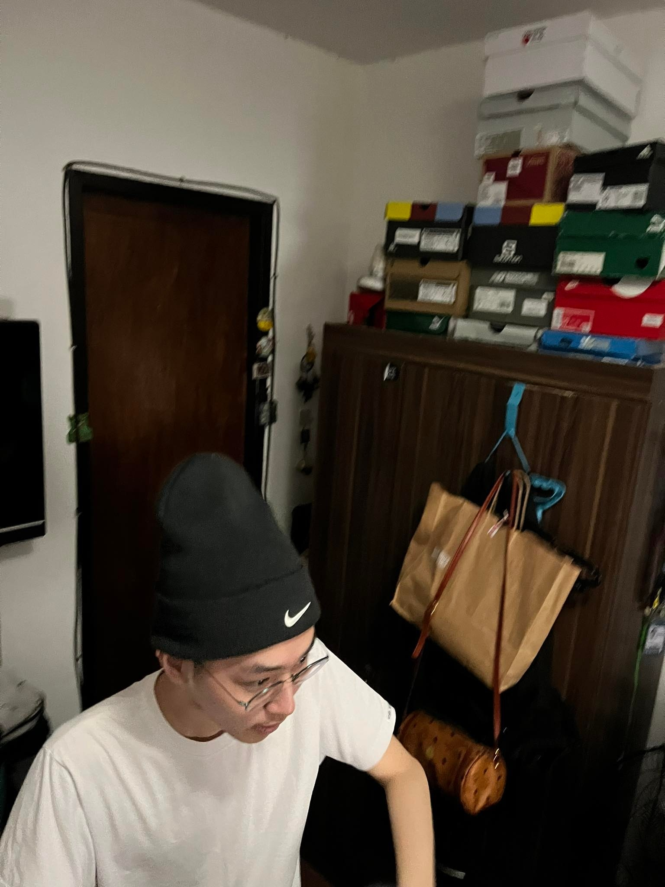

Masayoshi Miki
My name is Masayoshi Miki, my friends call me Maki, Yoshi, or Miki. I'm 20 years old right now gonna turn 21 years old on May 3. I love singing and dancing even though I'm not good at it I also enjoy doing it with friends, family, and relatives. I believe in "Knowledge is power" that's why I love learning new things. General knowledge can be helpful in studies, but can also help you in real life. I don't have much achievements, but I have many great memories. It doesn't mean that I don't want to achieve anything. In fact I have something in mind that I need to achieve later in life, I want to have a good career and live a good life to make my parents proud and happy.